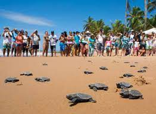
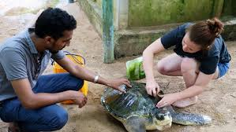
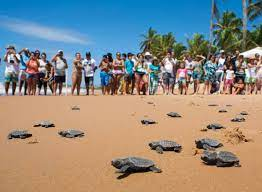
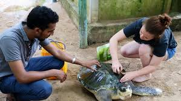

Threats to Turtles in Sri lanka
Due to numerous challenges, sea turtles in Sri Lanka are now considered to be endangered or critically endangered. Along with overfishing and pollution, these dangers also include habitat loss. Sea turtles are seriously endangered in Sri Lanka due to habitat destruction. Sea turtles' natural habitat has been disrupted and nesting places have been destroyed as a result of development along the shore, including the building of hotels and other tourism infrastructure. A decrease in sea turtle populations is a result of this habitat degradation. In Sri Lanka, pollution poses additional risk to sea turtles. Sea turtles can become entangled in pollution-related plastics, such as fishing nets and plastic bags, and drown as a result. In addition to harming sea turtles and their habitats, pollution from oil spills and other harmful substances can also do so.
Sea turtles in Sri Lanka face a third significant threat from overfishing. Injuries or fatalities can result from turtles becoming caught in fishing nets or unintentionally being caught by fisherman. Sea turtles may have a harder time surviving if overfishing depletes the food sources on which they depend. The Sri Lankan government has put in place rules and legislation to safeguard sea turtles and their environments in response to these dangers. These regulations include limitations on fishing methods like gill nets and trawling that endanger marine turtles. Sea turtles can nest without being bothered by people in protected zones that the government has designated.
The conservation of sea turtles is actively supported by non-governmental organizations (NGOs) in Sri Lanka. These groups aim to rescue and rehabilitate wounded turtles as well as spread awareness about the value of sea turtles and their habitats. Additionally, they collaborate with neighborhood groups to promote clean water and pollution reduction. Sea turtles in Sri Lanka still face serious risks despite these initiatives. To safeguard the existence of these stunning species and ensure that future generations may enjoy them, it is critical that individuals, governments, and organizations continue to collaborate.
 



Conservation Strategies
No 2 of 1937 administered by the Department
of Wildlife Conservation since 1st March 1937 (Amended 20th July 1972) and the Fisheries and
Aquatic Resources Act, No 2 of 1996 administrated by Department of Fisheries. Sea turtles and
their eggs, both on land and sea, are completely protected by amendments to the Fauna and Flora
Protection Ordinance in 1970 (for the leatherback turtle) and by regulation in 1972 (for the other
four turtle species). The punishments meted out to offenders have been increased by the Fauna
and Flora Protection (Amendment) Act No 49 of 1993). Under Section 30 of the Fauna and Flora
Ordinance (as amended), it is an offence to kill, wound, harm or take a turtle, or to possession a
turtle (dead or alive) or any part of a turtle, to sell or expose for sale a turtle or part of a turtle, or
to destroy or take turtle eggs
Sri Lanka entered into the CITES agreement in 1979 which
prohibits member nations from export or import of turtles and their parts and products. Number
of strategies and measures are being applied to minimize the interactions with sea turtles through
modifications of fishing gear and fishing practices.
- Inadequate habitat protection and management
- Inadequate expertise, skills and training for in-situ conservation
- Reduced effectiveness of in-situ conservation measures due to insufficient information on turtle
- Inadequate funding to conduct effective and comprehensive in-situ programmes
- Lack of concern about in-situ protection measures
- Practice of certain hatchery techniques is detrimental to the survival of marine turtle populations
- Inadequate monitoring and regulation of hatchery activities
- Inadequate skills and hands-on training for systematic hatchery management
- hatchery practices are reflected more as commercial ventures and less as conservation initiatives
- Insufficient awareness on hatchery activities among tourist and local communities
- Insufficient funding to operate and maintain hatcheries on scientific management basis
- Insufficient knowledge and application of existing scientific knowledge
- Inadequate funding for research and monitoring programmes
- Inadequate number of trained personnel
Issues
Read more About kosgoada Turtle hatchery and Benthota Turtle hatchery
Navy apprehends two persons for slaughtering sea turtles
The Navy apprehended two persons for slaughtering sea turtles, during a search operation conducted in Arippu of Silawathura in Mannar on Monday (22nd May 2023). The suspects had two (02) live sea turtles and some turtle flesh in their possession.
Sri Lanka: Hundreds of sea animals washed ashore after ship disaster
The X-Press Pearl sank in early June off the coast of Colombo after it had been on fire for days.The remains of 176 turtles, 20 dolphins and four whales have washed ashore since, a court has heard.Experts fear the ship, which carried tonnes of oil in its tanks, will remain an environmental hazard for decades .Experts fear the ship, which carried tonnes of oil in its tanks, will remain an environmental hazard for decades.